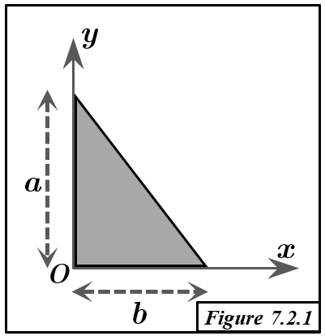

Solution Figure 7.2.1 : Triangle surfacique (OAB)

FIGURE 7.2.1 - Triangle surfacique O(0,0), A(0,a), B(b,0)
Méthode : Deuxième Théorème de Guldin
- Principe : Le volume $V_{/\Delta}$ généré par la rotation d'une surface d'aire $S$ autour d'un axe $\Delta$ (ne la traversant pas) est $V_{/\Delta} = S \times (2\pi R_G)$. $R_G$ est la distance de G (centroïde) à $\Delta$.
- Objectif : Trouver le centroïde $G=(x_G, y_G, z_G)$. Puisque la surface est dans le plan $z=0$, $z_G=0$.
Géométrie
- Triangle rectangle OAB : Sommets O(0,0), A(0,a), B(b,0).
- Base : OB sur l'axe Ox, longueur $b$.
- Hauteur : OA sur l'axe Oy, longueur $a$.
- Aire de la surface : $S = \frac{1}{2} \times \text{base} \times \text{hauteur} = \frac{1}{2} ab$.
Calcul du Centroïde $G = (x_G, y_G, 0)$
1. Coordonnée $x_G$ (Rotation autour de l'axe Oy)
- Axe de rotation : Oy ($x=0$). Le côté OA est sur cet axe. Distance de G à Oy : $R_{G, Oy} = x_G$.
- Volume généré : La rotation du triangle OAB autour de Oy engendre un cône.
- Sommet : O(0,0,0).
- Base : Disque de rayon $r_{base} = b$ (rotation de OB).
- Hauteur : $h_{cône} = a$ (le long de Oy, de O à A).
- Calcul du volume du cône : $V_{/Oy} = \frac{1}{3} \pi (\text{rayon de base})^2 \times (\text{hauteur}) = \frac{1}{3} \pi b^2 a$.
- Application de Guldin : $V_{/Oy} = S \times (2\pi x_G)$.
$$ \frac{1}{3} \pi a b^2 = \left(\frac{ab}{2}\right) \times (2\pi x_G) = \pi a b x_G $$
- Calcul de $x_G$ : (Simplification par $\pi a b$, si $a,b \neq 0$)
$$ x_G = \frac{\frac{1}{3} \pi a b^2}{\pi a b} = \frac{b}{3} $$
2. Coordonnée $y_G$ (Rotation autour de l'axe Ox)
- Axe de rotation : Ox ($y=0$). Le côté OB est sur cet axe. Distance de G à Ox : $R_{G, Ox} = y_G$.
- Volume généré : La rotation du triangle OAB autour de Ox engendre également un cône.
- Sommet : O(0,0,0).
- Base : Disque de rayon $r_{base} = a$ (rotation de OA).
- Hauteur : $h_{cône} = b$ (le long de Ox, de O à B).
- Calcul du volume du cône : $V_{/Ox} = \frac{1}{3} \pi (\text{rayon de base})^2 \times (\text{hauteur}) = \frac{1}{3} \pi a^2 b$.
- Application de Guldin : $V_{/Ox} = S \times (2\pi y_G)$.
$$ \frac{1}{3} \pi a^2 b = \left(\frac{ab}{2}\right) \times (2\pi y_G) = \pi a b y_G $$
- Calcul de $y_G$ : (Simplification par $\pi a b$, si $a,b \neq 0$)
$$ y_G = \frac{\frac{1}{3} \pi a^2 b}{\pi a b} = \frac{a}{3} $$
Résultat
Le centroïde G du triangle surfacique OAB a pour coordonnées :
$$ x_G = \frac{b}{3} $$
$$ y_G = \frac{a}{3} $$
$$ z_G = 0 $$
Soit $G = (b/3, a/3, 0)$.
Conclusion
- Le centroïde du triangle rectangle OAB est $G=(b/3, a/3, 0)$.
- Ce résultat est classique : le centroïde d'un triangle est à l'intersection des médianes. Pour un triangle rectangle, il est à 1/3 de chaque côté adjacent à l'angle droit, mesuré depuis ce sommet.